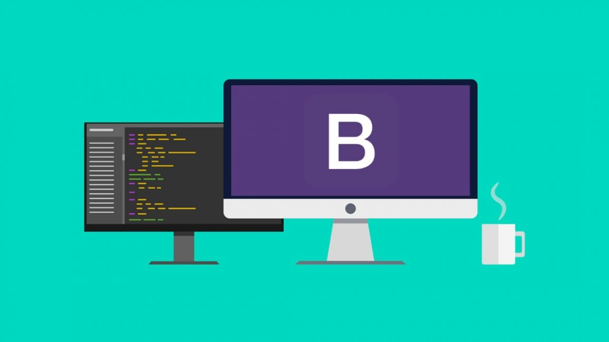

GitHub es un sitio "social coding". Te permite subir repositorios de código para almacenarlo en el sistema de control de versiones Git. Tu puedes colaborar en proyectos de código, y el sistema es código abierto por defecto, lo que significa que cualquiera en el mundo puede encontrar tu código en GitHub, usarlo, aprender de el, y mejorarlo.
Bootstrap es un framework front-end utilizado para desarrollar aplicaciones web y sitios mobile first, o sea, con un layout que se adapta a la pantalla del dispositivo utilizado por el usuario. ¡Aprende todo sobre esta tecnología y cómo utilizarla!
